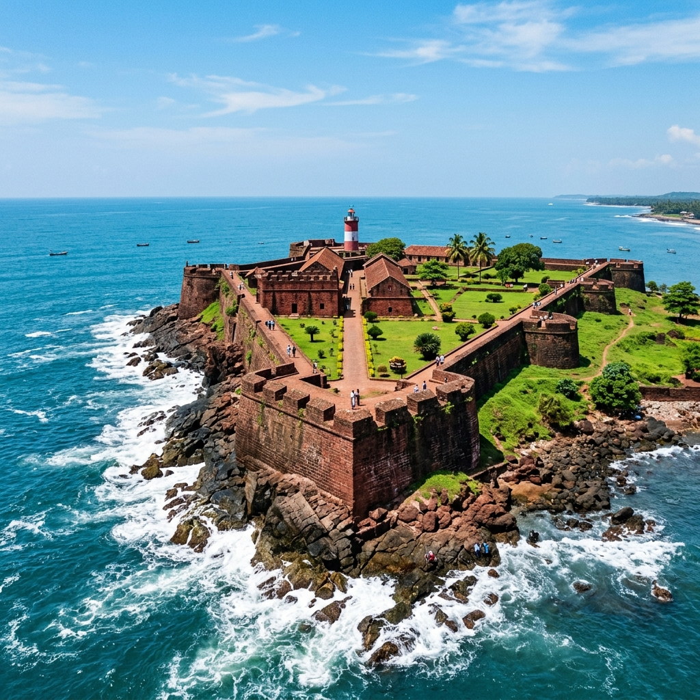
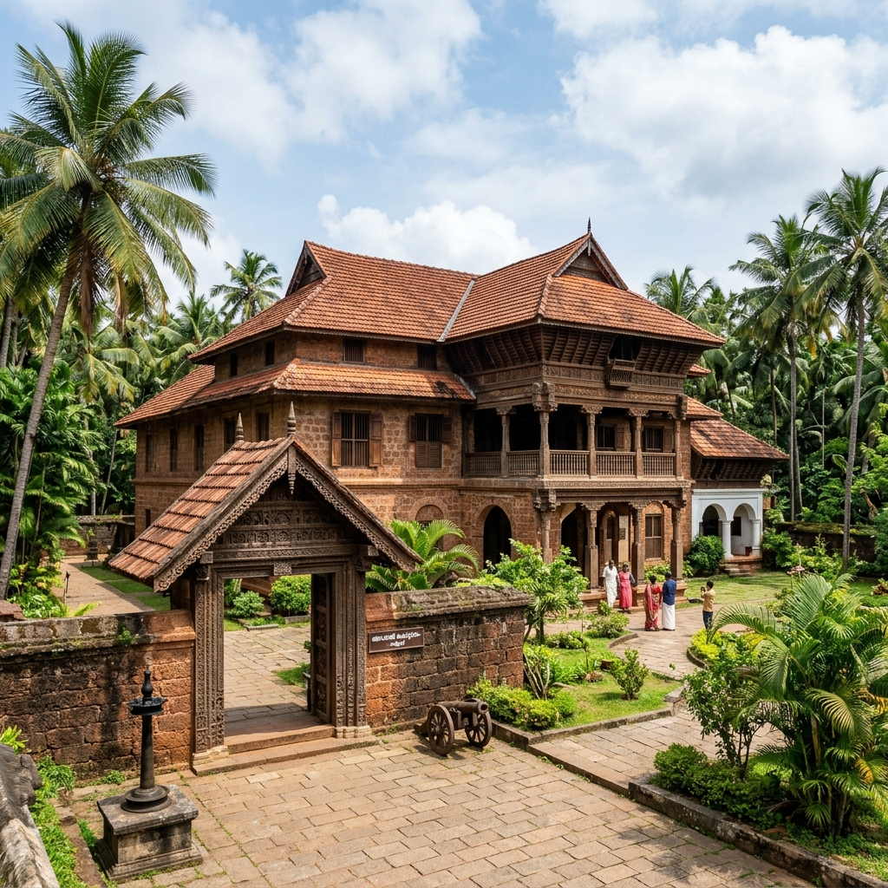
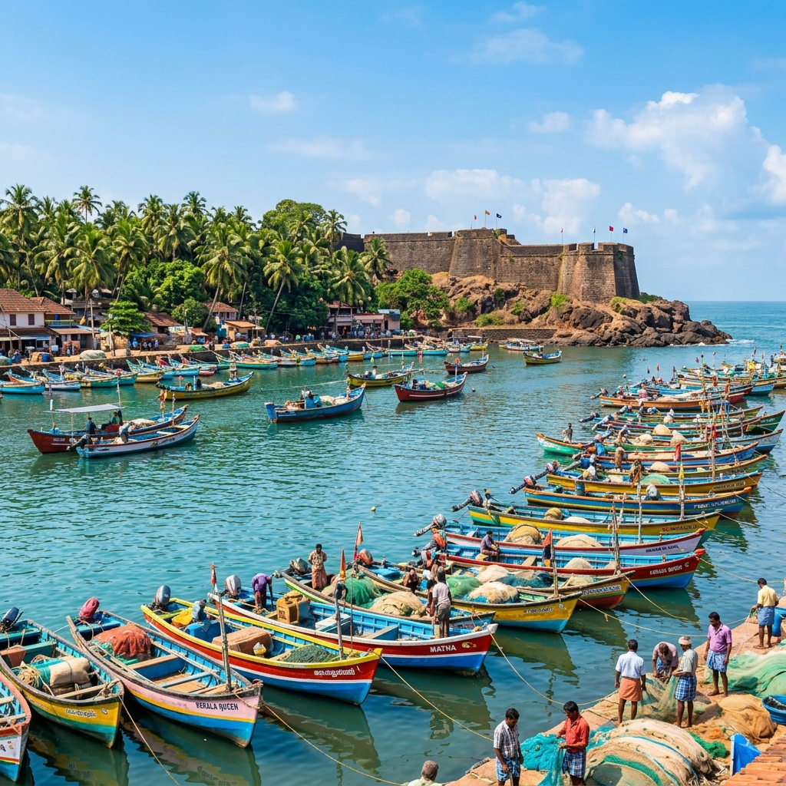

Kannur Ancient Port Explorer
Step onto the laterite shores of Kannur. Discover its rich history as a prominent spice trading center under the Kolathiri Rajas, its naval conflicts, and the heritage of St. Angelo Fort.
Capital of Spices and Coastal Sovereigns
Kannur (traditionally Cannanore) has served as an essential seafaring port on the Malabar Coast of Kerala since antiquity. Positioned along the trade routes of the Arabian Sea, it was the principal seat of the Kolathiri Rajas, who fostered dynamic trade networks with Rome, Arabia, and China.
The port is historically identified by scholars as *Naura*, referenced in the 1st-century Greco-Roman text *Periplus of the Erythraean Sea*. In 1293, the Venetian traveler Marco Polo visited the region, writing extensively about its agricultural richness, organized shipping vessels, and thriving black pepper trade.
📜 Malabar Archives
- Estuary Harbor: Set against the calm backwaters of Mappila Bay.
- Naura Emporium: Documented in Roman trade records as a key shipping station.
- Arakkal Dynasty: Seat of Kerala's sole Muslim royal dynasty, renowned for maritime commerce.
Maritime Trade Significance of Kolathunadu
Kannur's trade thrived due to its direct access to the rich spice plantations of the Western Ghats and its natural harbor at Mappila Bay.
Malabar Black Pepper
Sought after globally for its pungency, Kannur exported massive yields of pepper to Roman, Arab, and Chinese merchants.
Coir and Cordage
Made from local coconut husks, Kannur's high-tensile coir ropes were highly valued by shipbuilders to rig sailing vessels.
Teak Shipbuilding
Dense teak forests inland supplied raw timber to native shipwrights, building ocean-going merchant vessels and dhows.
🏰 Laterite Bastions & Royal Halls
- Fort St. Angelo: A massive triangular laterite fort overlooking Mappila Bay, built by Portuguese Viceroy Francisco de Almeida in 1505.
- Arakkal Palace: Seat of the Arakkal royal family, featuring maritime charts and cultural relics.
- Mappila Bay: A natural harbor where medieval spice fleets anchored.
The Laterite Walls of St. Angelo Fort
During the early 16th century, Kannur became a focal point of European expansion. In 1505, Francisco de Almeida constructed Fort St. Angelo on a rocky promontory. Built of red laterite stone, this fort commanded the harbor lanes of Mappila Bay.
Control of the fort changed hands over the centuries, reflecting Malabar's changing political landscapes. The Dutch captured it in 1663, modifying the fort with stone ramparts, and later sold it in 1772 to the Arakkal Kingdom, before it was captured by the British in 1790.
Chronology of Kannur Port
Tracking Kannur's evolution from Naura emporium to Kerala's historic spice harbor.
Naura Trade Station
Roman fleets visit the Malabar Coast, importing gold and exporting black pepper from Naura.
Marco Polo's Account
The Venetian traveller stays in the Kolathiri kingdom, describing Kannur's spice networks and harbor ships.
Portuguese Fort Construction
Francisco de Almeida constructs Fort St. Angelo to enforce a Portuguese monopoly on pepper shipping.
Dutch Hegemony
The Dutch East India Company captures Fort St. Angelo, rebuilding it into a modern military bastion.
British Military Station
British forces take control of Cannanore, establishing it as their largest cantonment in West India.
Forts and Harbors of Kannur
Discover the natural beauty and historic trade relics of the Malabar Coast.



📚 References & Further Reading
- Logan, William (1887). Malabar Manual. Government Press Madras.
- Yule, Henry (Translator) (1903). The Book of Ser Marco Polo. John Murray.
- Panikkar, K. M. (1929). Malabar and the Portuguese. D. B. Taraporevala Sons.
- Department of History & Heritage. Cannanore Fort Excavation Surveys. Government of Kerala.